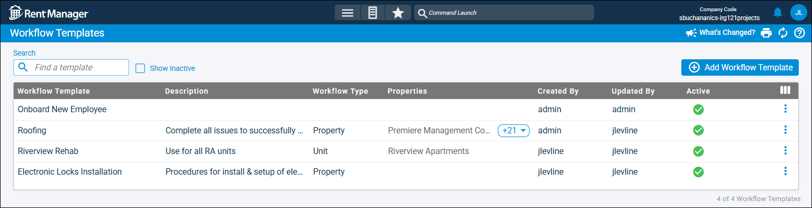

Source: https://rmxhelp.rentmanager.com/Topics/Express/CSH/Workflow-Templates.htm
Workflow Templates (Page)
If you have a routine procedure that involves completing the same work on a recurring basis, consider creating a workflow template. The advantage of creating a template is the time saved by defining routine stages and steps involved in completing a workflow project, then reusing the template to accomplish these goals. The Workflow Templates page displays all the templates you've created for your workflow projects.
Related Privileges
| Group | Privilege | Column |
|---|---|---|
| Service Manager | Workflow Templates | View |
For more information, refer to Control User Access.
To view and manage workflow templates, go to  arrow_forward Services arrow_forward Workflows arrow_forward Workflow Templates.
arrow_forward Services arrow_forward Workflows arrow_forward Workflow Templates.

To display workflow templates for which Active is not selected, check the Show Inactive field.
Column Descriptions
The following columns display on this page. By default, some columns display only if added via  .
.
| Default Column | Description |
|---|---|
|
Active |
This column displays a |
|
Created By |
The name of the user who created the workflow template. |
|
Description |
Additional details about what the workflow template is used for (e.g., Use this template when onboarding a new hire). |
|
Properties |
The properties an entity must be associated with in order to be linked to a workflow project generated from this template. More Information You must have access to at least one of a workflow template's associated properties to generate a workflow project from it. Your access to properties can be managed from your user account or on the property's details page. For more information, refer to Limit Access to a Property. |
|
Updated By |
The name of the user who last edited and saved the workflow template. |
|
Workflow Template |
The name given to the workflow template. |
|
Workflow Type |
The entity type with which the workflow template is associated (e.g., Property, Unit, Tenant, and so on). This is selected when creating a workflow template in the Workflow Template Type field, or subsequently in the template's settings. |
| Available Columns | Description |
|
Create Date |
The date on which the workflow template was created. |
|
Default Assigned To |
The name of the user assigned to all issues added to the workflow template by default. If no user is assigned, this column displays <Unassigned>. |
|
Default Category |
The issue category used as the default type for all issues within the workflow template (e.g., Property Wide, Maintenance, Electrical, Plumbing, Emergency, Office). If no category is selected, this column displays <Unassigned>. |
|
Default Priority |
The issue priority used as the default description of the urgency assigned to all issues within the workflow template (e.g., Critical, High, Medium, Low). If no priority is selected, this column displays <Unassigned>. |
|
Default Status |
The issue status used as the default progress of all issues within the workflow template (e.g., New, Work in Progress, Resolved, Unresolved). If no status is selected, this column displays <Unassigned>. |
|
Default Vendor |
The name of the default vendor associated with the work defined in the Work Order tile for all issues within the workflow template. If no vendor is selected, this column displays <Unassigned>. |
|
Enforce Sequence |
This column displays a |
|
Stages |
The number of unique phases involved in completing the workflow template. |
|
Steps |
The number of issues and/or tasks that must be completed in the workflow template. |
|
Update Date |
The date on which the workflow template was last updated. |
Row Actions
The following row actions are available.
| Action | Description | ||||||
|---|---|---|---|---|---|---|---|
|
Copy |
Related Privileges
For more information, refer to Control User Access. Create a duplicate of the workflow template. By default, this copy is named Copy of followed by the Workflow Template Name. |
||||||
|
Delete |
Related Privileges
For more information, refer to Control User Access. Permanently remove the workflow template from Rent Manager. Warning Deleting a workflow template is permanent and cannot be undone. However, deleting a workflow template does not delete workflow projects generated from the template. If a template needs to be retired, consider making it inactive instead. |
||||||
|
Edit |
Related Privileges
For more information, refer to Control User Access. Open the workflow template's details page, where you can review its settings, stages, and steps. |